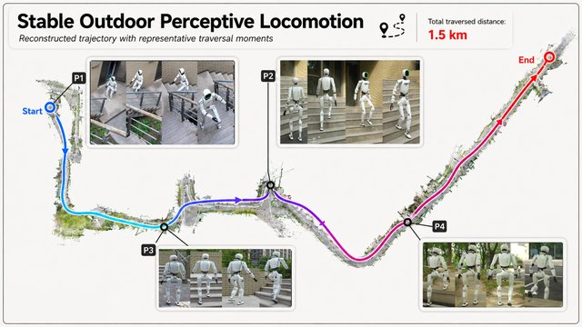
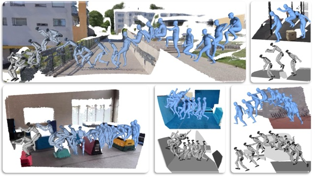
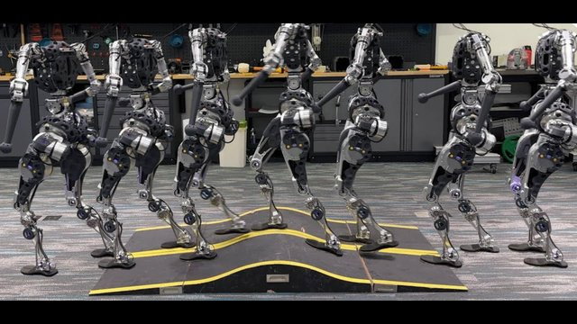

Qiang (Jony) Zhang 张强Assistant Professor, USTC
|

|
Biography
I am an Assistant Professor at the University of Science and Technology of China (USTC), affiliated with the School of Artificial Intelligence and Data Science and the Artificial General Intelligence Institute, working alongside Prof. Shaoqing Ren. My research focuses on Humanoid Robots and Embodied AI, spanning reinforcement learning, vision perception, large language model–based decision making, and control & planning.
Previously, I served as Chief Researcher and Director of the Academic Committee at the Beijing Humanoid Robot Innovation Center (China National and Local Co-built Embodied AI Robotics Innovation Center), where I led part of the TianGong team in frontier research.
Before that, I was a Research Intern at Fourier Intelligence and a main contributor to the GR-1 humanoid robot and its reinforcement-learning-based locomotion control. I subsequently joined PNDbotics as a Research Intern and Technical Lead of the Adam humanoid, focusing on anthropomorphic motion.
Earlier, I spent a highly rewarding period at DJI.
Students: I welcome highly motivated students interested in pursuing a Master's or Ph.D. degree in my group. Undergraduate research interns, research assistants, and visiting students are also encouraged to contact me. Please email a CV and a short research statement to jonyzhang@ustc.edu.cn.
News
| 2026-08 | Our algorithms SOLO and MeshMimic supported TianGong Omni's championship at the 2026 World Humanoid Robot Games 400 m obstacle race. |
| 2026-08 | Featured in the inaugural episode of the China Computer Federation (CCF) TF series Dialogue on the Tech Frontier, discussing world models and the path toward large-scale deployment of embodied intelligence. |
| 2026-07 | Joined USTC as an Assistant Professor. |
| 2025-05 | Published a signed essay in People's Daily on the hierarchical architecture of humanoid robots: Do Humanoid Robots Have a “Big Brain” and a “Small Brain”? |
| 2025-04 | Our algorithm supported TianGong Ultra's championship at the 2025 Beijing Humanoid Robot Half-Marathon. |
| 2024-11 | Interviewed by Global Times on TianGong's half-marathon appearance and the open-source initiative for humanoid robotics: Advancements in AI for Football and Robot Marathons. |
Selected Publications
|
 |
SOLO: Stable Omni-terrain Long-Horizon Perceptive Humanoid Locomotion CoRL 2026 Paper / Project Supported TianGong Omni's championship at the 2026 World Humanoid Robot Games 400 m obstacle race. |
|
 |
MeshMimic: Geometry-Aware Humanoid Motion Learning through 3D Scene Reconstruction CoRL 2026 Paper / Project Supported TianGong Omni's championship at the 2026 World Humanoid Robot Games 400 m obstacle race. |
|
 |
Whole-body Humanoid Robot Locomotion with Human Reference IROS 2024 Paper / Video Supported TianGong Ultra's championships at the 2025 Beijing Humanoid Robot Half-Marathon and the 2025 World Humanoid Robot Games 100 m. |
Full list available on Google Scholar.